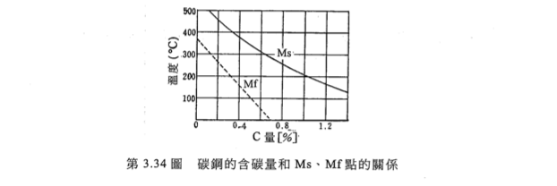
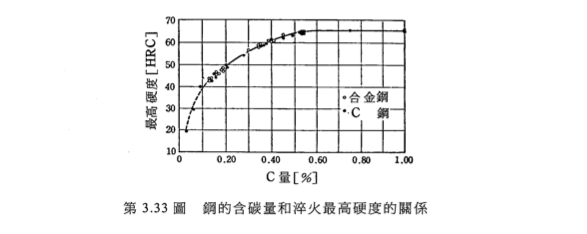
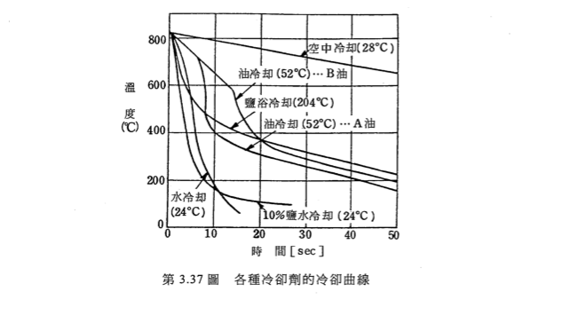
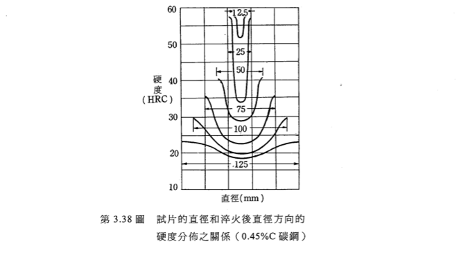

退火(Annealing)
把鋼料加到特定的溫度，慢慢慢慢慢的冷卻。乍看之下會覺得這樣會讓內部應力消失 ，讓材料變軟，而事實上就是這個樣子，跟之前學的那個什麼再結晶一樣。
消除加工硬化，增加加工性。
調整結晶構造
消除不均勻性，比如說消除冷卻時的偏析(有人會叫均值化處理)。
簡單來說，會用到這種事的場合有兩種。一種是加工加工到一半，希望他變軟，
這時候不用升到太高的溫度，
比共析溫度略低即可。這種退火叫「製程退火」。
另外一種狀況是你就是想要這種性質的金屬你咬我啊，
這時候會把溫度加熱到比變態溫度略高一些，
讓變態較容易發生。
這種退火就叫做「完全退火」。
加工退火比較單純，就是加到那個溫度，然後冷卻就好。
完全退火比較講究一點。首先是溫度， 適合的完全退火的溫度是非常接近變態時的溫度， 太高溫的話，以前學在在再結晶的時候都知道這會形成太粗大的晶粒， 材料會變太脆弱。所以不希望太高。
注意到退火溫度通常會比理論最小值再多個30~50度，因為爐子通常不是均勻的加熱， 所以要預留一些空間。
正常化(Normalizing)
是一個跟退火很像的東西，只不過是把它夾到一定溫度之後，不是慢慢冷卻，而是 把他放空冷。這個是用在鑄造跟焊接的時後。因為這兩個過程會讓鐵保持在高溫 很長的時間，這時候晶粒就會變大，機械性質就不好。 這時候就需要做一些事讓晶粒變小，這時候就是使用均值化的時候～
淬火(Quenching)
剛剛說過，把握斯田鐵暴力冷卻會得到很硬的麻田散鐵，這就是淬火～
淬火是很看資質的一件事，不是每一種鋼都適合淬火。先看一下下面的圖：
 含碳量多的麻田散鐵比較硬，但是形成麻田散鐵的完成度會越低，殘留沃斯田鐵 的比率會隨含碳量增加而變少，所以彼此之間抵銷，最後含碳量越多的鋼，硬度 反而不會增加的那麼顯著。
麻田散鐵生成跟一般的鐵不太一樣。他是突然噴出來的，速度跟聲速一樣。 而且麻田散鐵密度比沃斯田鐵低，所以瞬間噴出一堆麻田散鐵之後，夾在中間的 沃斯田鐵就需要更多力量才能撐開周圍的麻田散鐵，完成變態。這麼變態的過程當然不可 能每個人都做得到啊～所以最後就會有一些沃斯田鐵不能順利變態完成， 變成殘留沃斯田鐵。反正周圍壓力很大，常溫可以讓沃斯田鐵存在也是正常的。
這麼變態的過程，那如果應力太大會不會不小心裂開啊？當然會啊～這就是 淬火裂痕。淬火裂痕的成因有兩個。 一個是熱脹冷縮，外面剛冷卻時，是熱脹時的半徑。等裡面冷縮時，就會把外殼 往裡面拉，在表面形成壓力。不過因為鐵抗壓很好，所以這個危害還好。 另外一個是變態時的的密度變化，這個比較危險，因為裡面體積變大， 想要把外殼撐開，所以對外殼來說是形成張力，如果太快，這個就對鐵不太好了。 真正的危害是密度變化的影響。
要避免這件事的方法，就是小心選擇淬火液：
可以注意到的是，鹽水在nose區域的冷卻是最快的。 因為加熱時，鐵附近的水會瞬間被蒸發，鹽會析出來，並且在水蒸氣泡泡附近跳動， 這樣就可以把附近的小泡泡排開，新的冷水就可以進到鐵的表面， 這樣就增加淬火的效率了。
微觀構造來說，麻田散鐵是個想變成BCC的FCC，但是因為太快了，C沒辦法 順利卡進面上，只好卡在邊上，形成BCT構造，這個就叫「\(\alpha\)麻田散鐵」。 如果把他稍微回火一些，那麼C就可以離開本來的晶格，跟其他鐵形成鐵碳化合物， 這種就叫「\(\beta\)麻田散鐵」。
再來看溫度：
亞共析鋼很明顯把它提升到沃斯田鐵就可以了。那為什麼過共析鋼不是提升到Acm ? 注意淬火的要求是硬度。麻田散鐵的硬度是68，但是雪明碳鐵是800~1100。 如果要提升硬度，最直接的方法就是產生盡可能多的雪明碳鐵。 Level Rule一下去就發現越靠近共析溫度，產生的雪明碳鐵越多。這就是 高碳鋼是在共析溫度淬火的理由。
不過，高碳鋼淬火會有一個bug：產生的雪明碳鐵是網狀的，這是很不好的結構。 所以淬火完之後還要做一些處理，把他變成球狀雪明碳鐵。
質量效果
這裡先講一個小常識：如果你把東西等比例放大兩倍，表面積-體積比會變小。 但是淬火時，熱是從表面積散出的，所以比例放大時，冷卻效率反而會下降。 這就是質量效果。如果把它畫出來會長這樣：
因為這根本是常識，所以沒有直接的方法可以避免他。那要怎麼辦？
答：用合金